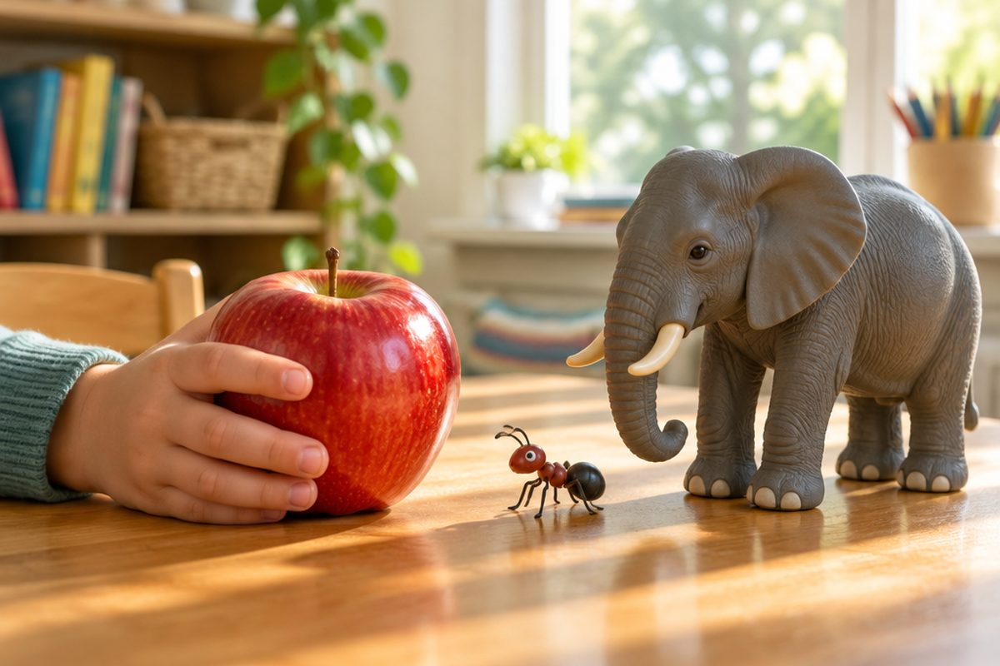

전체 단원 › 2학년 1학기 › 국어 › 3단계 · 꾸며 주는 말
'빨간' 사과는 어떤 사과일까?

'사과'보다 '빨간 사과'가 더 잘 떠올라요. 꾸며 주는 말을 알아봐요.
색깔과 크기를 꾸며요
'빨간', '노란'은 색깔을 알려 줘요.
'큰', '작은'은 크기를 알려 줘요.
빨간 사과, 커다란 코끼리, 작은 개미
어떻게 하는지 꾸며요
'빨리', '천천히'는 움직임을 꾸며요.
어떻게 하는지 알려 줘요.
토끼가 빨리 달려요. 거북이 천천히 걸어요.
흉내 내는 말도 꾸며요
'엉금엉금', '반짝반짝'도 꾸며 주는 말이에요.
모양이나 소리를 흉내 내요.
엉금엉금 기어가요. ⭐ 반짝반짝 빛나요.
문장이 생생해져요
꾸며 주는 말을 넣으면 문장이 생생해요.
눈앞에 그림이 그려져요.
꽃이 피었어요. → 예쁜 꽃이 활짝 피었어요.
핵심 낱말
- 꾸며 주는 말
- 다른 말의 색깔, 크기, 모양, 움직임을 자세히 알려 주는 말
- 흉내 내는 말
- 소리나 모양을 흉내 낸 말(엉금엉금, 반짝반짝)
- 생생하다
- 눈앞에 보이는 것처럼 또렷하다
꼭 알아야 할 표현
| 빨간 사과 | 🍎 색깔을 꾸며요 | |
| 노란 바나나 | 🍌 색깔을 꾸며요 | |
| 커다란 코끼리 | 🐘 크기를 꾸며요 | |
| 작은 개미 | 🐜 크기를 꾸며요 | [자근 개미] |
| 귀여운 강아지 | 🐶 모습을 꾸며요 | |
| 빨리 달려요 | 🐇 움직임을 꾸며요 | |
| 천천히 걸어요 | 🐢 움직임을 꾸며요 | [천천히 거러요] |
| 엉금엉금 기어가요 | 🐢 흉내 내는 말 | |
| 반짝반짝 빛나요 | ⭐ 흉내 내는 말 | [반짝빤짝 빈나요] |
| 예쁜 꽃이 활짝 피었어요. | 🌷 꾸며 주는 말이 두 개 들어간 문장 | [예쁜 꼬치 활짝 피어써요] |
한 줄 정리
- 꾸며 주는 말은 색깔, 크기, 모양을 자세히 알려 줘요.
- '빨리', '천천히'처럼 움직임을 꾸미는 말도 있어요.
- 꾸며 주는 말을 넣으면 문장이 생생해져요.
학교 교육과정 연결
- [2국03-02] 쓰기에 흥미를 가지며 자신의 생각이나 느낌을 문장으로 표현한다.